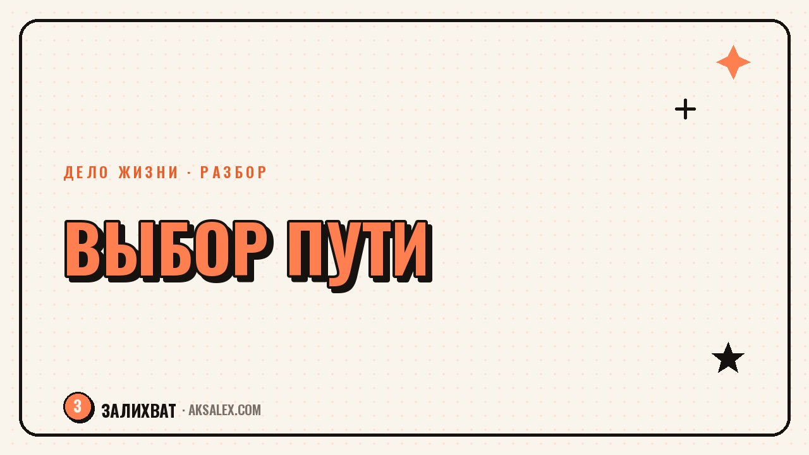

Как принять решение, если выбор пугает

Остаться на понятной работе или уйти в своё дело. Переехать в другой город или остаться рядом с близкими. Такие развилки не решаются списком плюсов и минусов - ты уже знаешь плюсы и минусы, и именно поэтому застрял. Страх перед выбором между путями редко связан с нехваткой информации - он связан с тем, что любой вариант означает отказ от другого, а это по-настоящему неприятное чувство. Разберём, что реально помогает двигаться дальше, когда оба пути кажутся и привлекательными, и рискованными одновременно.
Почему выбор пугает сильнее, чем кажется логичным
Страх перед решением почти всегда связан не с самим выбором, а с тем, что он закрывает дверь в другую версию жизни. Пока ты не выбрал, оба пути существуют как возможность - и это даёт иллюзию контроля. Решение превращает возможность в факт, а факт можно пережить как потерю, даже если выбранный путь хороший.
Добавь к этому страх ошибиться публично - перед семьёй, партнёром, самим собой через пять лет. Чем значимее решение, тем громче звучит внутренний голос «а что если это неправильный выбор». Этот голос не врёт о риске, но он преувеличивает цену ошибки - большинство решений можно скорректировать позже, хотя это не кажется правдой в момент страха.
Страх выбора редко про сам выбор - он про прощание с версией себя, которая выбрала бы иначе.
Чем вреден поиск идеального варианта
Когда оба пути взвешены до мелочей, а решения всё нет, обычно происходит одно - человек ждёт третий вариант, который устранит риск совсем. Такого варианта не существует. Любое значимое решение означает отказ от части выгод другого пути, и это нормальная цена любого выбора, а не признак того, что выбор сделан неправильно.
Бесконечный анализ создаёт ощущение движения, но на деле откладывает решение на потом. Время при этом не стоит на месте - упущенные месяцы без выбора иногда дороже, чем цена возможной ошибки в любом из вариантов.
Признаки, что анализ превратился в избегание
- Ты собираешь информацию уже месяцами, но не продвинулся в решении
- Каждый новый факт только добавляет сомнений, а не ясности
- Ты пересказываешь дилемму разным людям, ожидая, что кто-то решит за тебя
- Появляется раздражение, когда тему поднимают снова
- Ты представляешь оба будущих, но не делаешь ни одного шага к проверке
Вопросы, которые помогают увидеть выбор яснее
Вместо того чтобы пытаться предсказать будущее, полезнее спросить себя о настоящем. Какие из твоих ценностей задействованы в каждом пути? Какой путь ты выбрал бы, если бы не боялся мнения конкретных людей? Что из того, чего ты боишься потерять, на самом деле можно вернуть позже, а что - нет?
Отдельно стоит спросить: какой выбор ты бы посоветовал близкому другу в точно такой же ситуации? Со стороны страх ошибки обычно звучит тише, а ценности - громче. Этот сдвиг перспективы часто показывает, что решение уже есть, но заблокировано страхом его произнести.
Упражнение на один вечер
- Напиши оба варианта на разных листах
- Под каждым запиши не плюсы и минусы, а свои ценности, которым он соответствует
- Прочитай оба списка вслух и заметь, где голос звучит увереннее
- Спроси себя, какой список писать было легче - это тоже сигнал
- Не принимай решение сразу - дай себе одну ночь, чтобы осесть
Как решения различаются по обратимости
Не все решения одинаково рискованны, хотя страх часто уравнивает их тревогой одного уровня. Полезно разделить решение по тому, насколько его можно скорректировать позже, если что-то пойдёт не так. Это снижает давление - не каждая развилка требует решения на всю жизнь.
| Тип решения | Пример | Можно ли скорректировать | Что это значит для тебя |
|---|---|---|---|
| Легко обратимое | Попробовать новое направление без увольнения | Да, почти без потерь | Можно решиться быстрее и проверить на практике |
| Частично обратимое | Смена профессии с сохранением связей в старой сфере | Да, с усилиями | Стоит оставить себе путь назад на первое время |
| Трудно обратимое | Переезд в другую страну с продажей жилья | Сложно и дорого | Нужно больше времени на решение и подготовку |
| Необратимое | Решения, которые физически нельзя отменить | Нет | Здесь оправдана максимальная осторожность и время |
Что делать, если решение всё равно не приходит
Если после упражнений ясности не прибавилось, возможно, дело не в недостатке информации, а в усталости, которая мешает трезво смотреть на ситуацию. Честнее признать это, чем требовать от себя решения через силу.
Если тревога перед выбором сильная и не проходит месяцами, это повод поговорить с психологом, а не только с собой через упражнения - некоторые страхи глубже, чем конкретная развилка.
Маленький шаг вместо большого решения
Если решение кажется слишком большим, чтобы принять его целиком, разбей его на маленький обратимый шаг в сторону одного из путей. Не нужно увольняться, чтобы попробовать новое дело - можно выделить несколько вечеров в неделю и посмотреть, как это ощущается на практике.
Маленькие шаги, которые снижают давление выбора
- Поговори с человеком, который уже прошёл похожий выбор
- Попробуй один элемент нового пути в свободное время
- Запиши, что именно изменится в твоей жизни через полгода при каждом варианте
- Дай себе конкретный срок на пробу, а не бессрочное «подумаю ещё»
- Отмечай, какой вариант приносит больше энергии, а не только меньше страха
Частые вопросы
Как понять, что я готов принять решение, а не откладываю его снова?
Признак готовности - ты перестаёшь искать новую информацию и начинаешь представлять конкретные шаги в сторону одного из вариантов. Если новые факты только добавляют сомнений, это обычно сигнал избегания, а не поиска истины.
Что делать, если оба варианта кажутся одинаково хорошими?
Попробуй сравнить не выгоды, а ценности, которым соответствует каждый путь, и спроси, какой выбрал бы близкий друг в такой же ситуации. Часто за внешним равенством вариантов скрывается уже сделанный внутренний выбор, который страшно произнести вслух.
Как перестать бояться, что решение окажется неправильным?
Полезно разделить решения по обратимости - большинство из них можно скорректировать позже, если что-то пойдёт не так. Страх ошибки обычно преувеличивает цену решения сильнее, чем она есть на самом деле.
Сколько времени нормально думать над важным решением?
Зависит от обратимости решения - для легко исправимых шагов хватает дней, для крупных и необратимых оправданы недели или месяцы вдумчивого размышления. Главный признак затягивания - если месяцы проходят, а ясности не прибавляется.
Когда стоит обратиться к психологу из-за трудностей с выбором?
Если тревога перед решением мешает обычной жизни, длится месяцами и не снижается после разговоров с близкими или упражнений, это повод обратиться к специалисту. Такая тревога часто связана не только с конкретным выбором, но и с более глубокими паттернами.
Раз тема оказалась полезной, вот что почитать следующим. Бесплатные нейросети для блога: тексты, обложки, видео и план публикаций без лишних трат на старте.
Читать статью →а не вручную